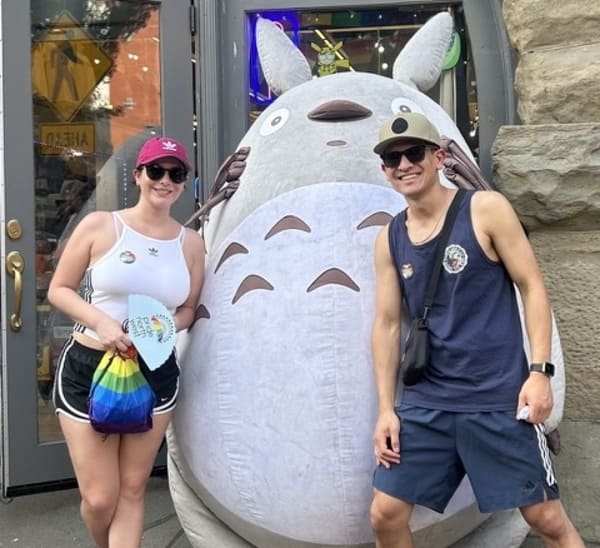
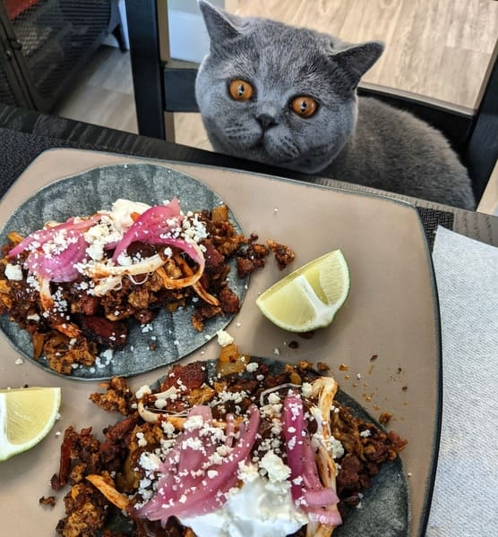
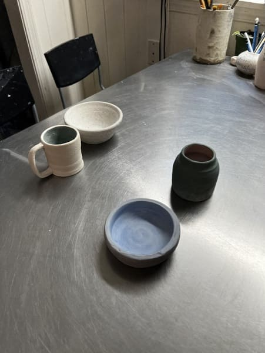
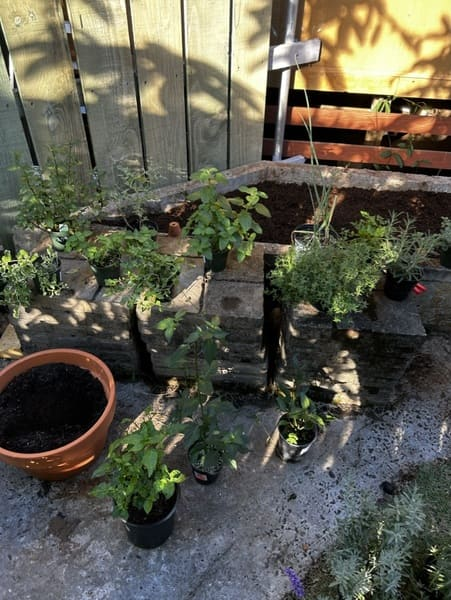
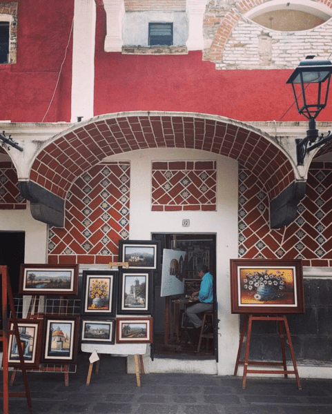
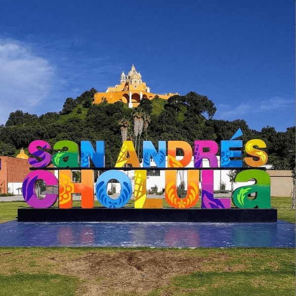
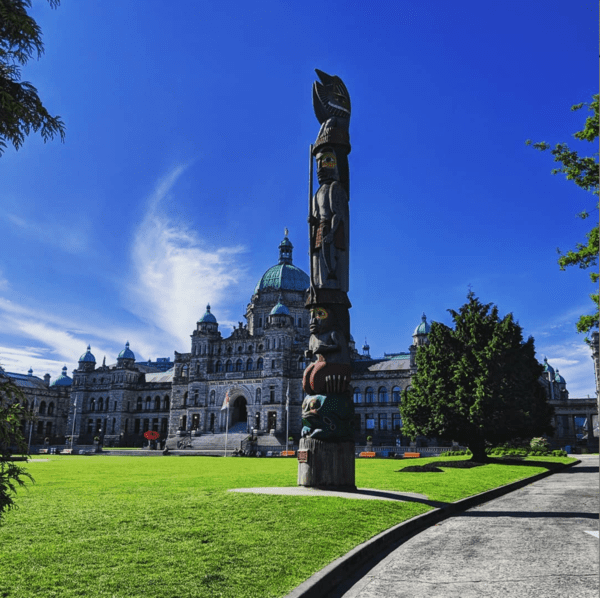
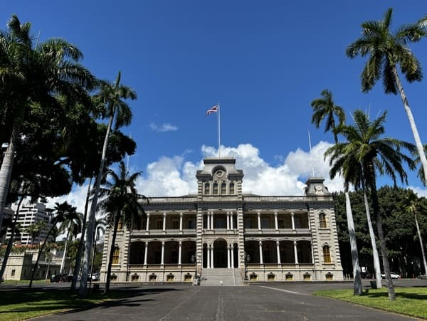
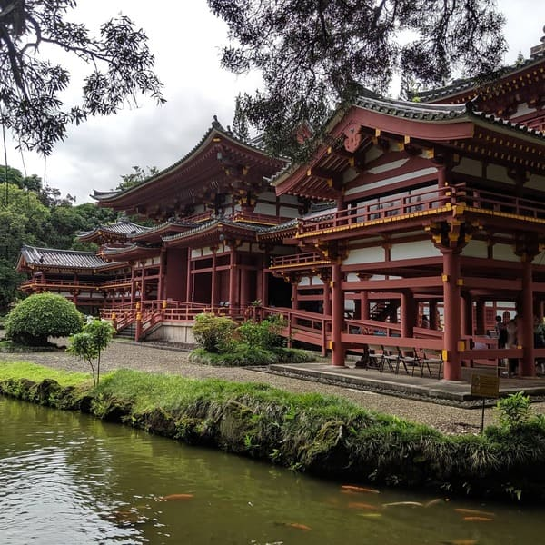

Myself (left) in downtown Portland.

Toulouse staring at a plate of tacos.

Painting pottery in a pottery class.

My herb garden.

Barrio del Artista, Puebla, Mexico.

San Andres Cholula, Puebla, Mexico.

Parliment building located in Victoria BC, Canada

The Lolani palace located in Honolulu, Hawaii.

Byodo-In Temple located in Kaneohe, Hawaii.Kingdom of Hawaii flag at Chinaman's Hat.